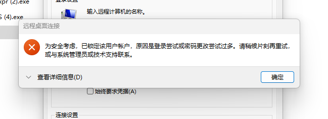
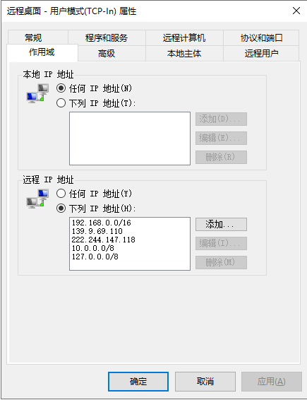
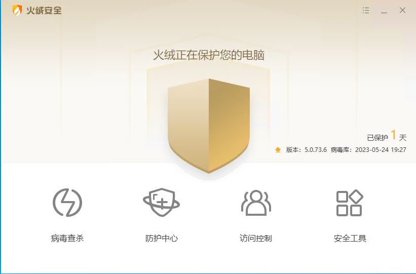

时间线

5.24一大早，客户打电话说系统不能使用
到公司想检查一下服务器还有网络情况
看系统是什么原因不能使用
但是我发现已经连接不上服务器了。
服务器部署的系统也不能访问。
打电话给客户，让他帮忙看一下服务器是什么情况
等客户打开服务器，看到服务器系统桌面一片红的时候
我就知道出事情了。服务器已经中了勒索病毒。
这种勒索病毒很恶心，把服务器系统上面所有的数据文件都锁定并且加密了。
要给黑客一定的赎金，几万到几百万不等，看数据的重要性决定
黑客才会把服务器里的加密文件解密，然后才能正常使用。
解决方案

- 交赎金给黑客，然后黑客会给你工具与方法，把对应数据文件恢复
- 直接把服务器数据全都格式化，然后重新部署服务器
对于数据很重要，又没有备份文件用来做恢复数据的情况下，有时候你只有交赎金才能解决。
如果备份文件在同一台服务器的情况下，备份文件也是会被加密的，相当于没有备份
所以只有当你有备份，且备份文件可用（异地备份）的情况下
才可以直接把服务器数据全都格式化，然后重新部署服务器
恢复过程
我们的数据库服务为：SqlServer
服务器也是单台服务器，既部署了数据库，也部署了应用系统在同一台服务器
原本在服务器中，我们有设置数据每天备份
但是因为没有条件把备份文件存档到其它地方，所以也是保存到此服务器下面
服务器硬盘是做的RAID1，相当于用2块硬盘做一主一备，但是这是硬件高可用
勒索病毒把所有备份文件也都加密了。所以相当于没有备份可用
但是我们还是幸运的。正好前两天我们要调试一个客户问题。
把客户的数据库完整备份了一次，然后把备份文件保存到了我们开发服务器。
所以我们还有2天前的数据备份可以用。
这样我们就可以用2天前的完整备份恢复数据，
然后通过纸质单据把这2天的数据补全，也能达到恢复的效果
所以我们通过UltralISO直接重新做了一个系统盘
然后重新引导DELL服务器进行了系统重装

系统安装好后，重新安装了SqlServer数据库服务
然后把两天前的数据备份还原
安装好.Net Core环境后
通过本地代码自动重新部署了系统
通过几个小时的安装与部署
终于从早上8点发现问题开始，到下午4点系统恢复正常
查找原因
在系统恢复正常过程中，我把所有旧密码都重新换了一次
在系统恢复后。黑客还在一直暴力破解服务器
搞了很多次我都不能正常远程服务器，老是提示帐户锁定
因为黑客在一直在暴力破解服务器，所以一定次数失败后，系统会自动锁定远程登录帐户

因为远程桌面是对外网公开，但是IP是动态IP，不固定的。
可能是黑客通过IP扫描扫到了这台服务器
然后再通过暴力破解，才把服务器密码攻破
也可能是原来在安装服务器的时候，可能安装的是优化版本服务器
在那个时候，就已经被黑客利用了。只是服务器还没有多少数据
所以在运行了半年后，数据也有了，黑客就开始勒索下毒
安全防护建议
- 所有帐户密码要定期更改
- 远程访问，对外端口等 在防火墙都设置白名单
- 定期备份关键数据，最好能把备份数据异地存档
- 系统部署安全防护软件（杀毒、防护）
- 使用正版软件（不要使用优化版本软件与工具）
- 服务器配合不间断UPS电源使用

